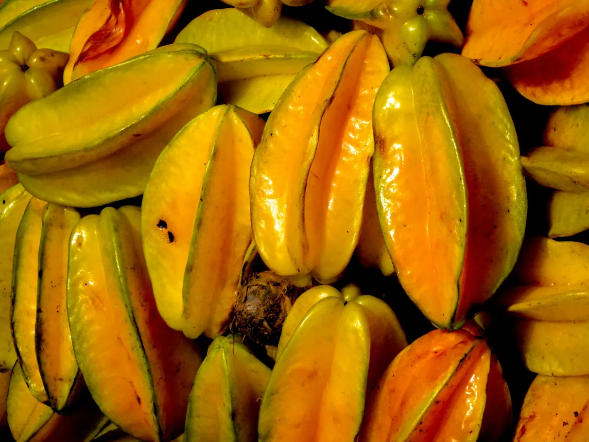
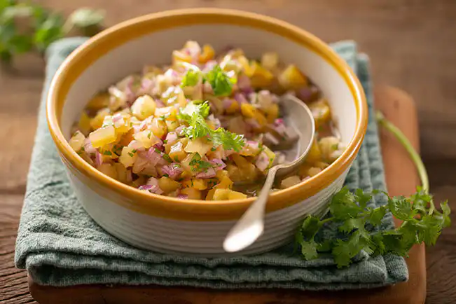
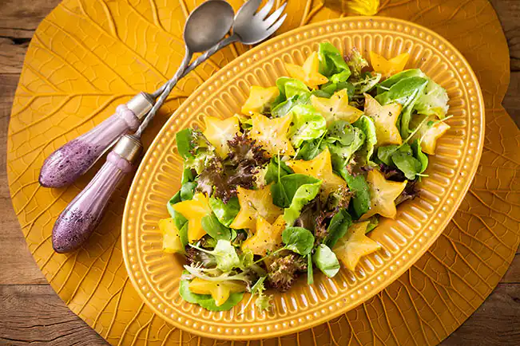
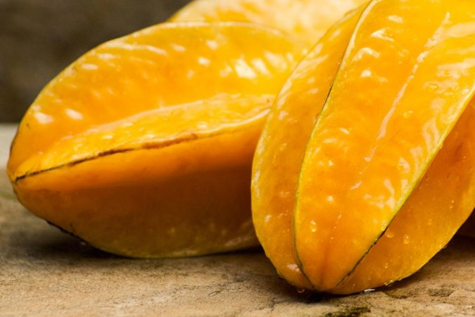

A carambola é uma fruta exótica que ajuda a prevenir problemas de saúde, como infarto, diabetes e aterosclerose, porque contém ótimas quantidades de antioxidantes, como flavonoides, vitamina C, ácido gálico e epicatequina. Além disso, a carambola tem excelentes quantidades de água e fibras, que ajudam no bom funcionamento do intestino, eliminam o excesso de líquido corporal, e prolongam a saciedade, promovendo o emagrecimento. A carambola é encontrada em feiras e supermercados, podendo ser consumida ao natural ou em preparações como sucos, doces ou geleias. No entanto, a carambola não deve ser consumida por quem tem alguma doença renal crônica, pois essa fruta pode aumentar os níveis de caramboxina no sangue, uma substância que pode causar confusão mental ou convulsões e, em casos mais graves, o óbito.

A carambola tem altas quantidades de fibras, que contribuem para a redução da absorção de gordura dos alimentos, controlando os níveis de colesterol total e colesterol “ruim”, LDL, no sangue. Além disso, a carambola é rica em antioxidantes, como a vitamina C, flavonoides e o ácido gálico, que combatem os radicais livres, prevenindo a oxidação e aumento dos níveis de colesterol total e LDL no sangue, prevenindo a aterosclerose, infarto ou derrame.
Por ter boas quantidades de fibras, a carambola ajuda a diminuir a velocidade de absorção do carboidrato dos alimentos, controlando os níveis de glicose no sangue, prevenindo e controlando a diabetes. Veja outras frutas com ótimas quantidades de fibras. Além disso, a carambola é rica em antioxidantes, como flavonoides e ácido gálico, que inibem os radicais livres, evitando danos nas células que produzem insulina, o hormônio responsável pelo equilíbrio de açúcar no organismo. Conheça mais alimentos ricos em antioxidantes.
As fibras, presentes em ótimas quantidades na carambola, ajudam a prolongar o tempo de digestão dos alimentos, controlando a fome e ajudando no emagrecimento. A carambola também é rica em água, ajudando a eliminar o excesso de líquido corporal e desinchando, além de ter poucas calorias, sendo uma boa opção para incluir em dietas para perda de peso.
A carambola é rica em potássio, um mineral que ajuda a eliminar o excesso de sódio do organismo pela urina, favorecendo o controle e a prevenção da pressão alta. Conheça outros alimentos ricos em potássio que ajudam a controlar a pressão alta.
| Componentes | Quantidade por 70g (1 unidade pequena) |
| Energia | 21,7 calorias |
| Proteínas | 0,7 g |
| Gorduras | 0,23 g |
| Carboidratos | 4,7 g |
| Fibras | 1,9 mg |
| Vitamina C | 24,1 mg |
| Betacaroteno | 17,5 mcg |
| Cálcio | 2,1 mg |
| Magnésio | 7 mg |
| Fósforo | 8,4 mg |
| Potássio | 93 mg |
Lavar bem e cortar as carambolas em cubos. Levar as carambolas, a água, as pedras de gelo e o mel ao liquidificador. Bater por 3 a 5 minutos e servir.

Lavar bem a carambola e as folhas de coentro e secar. Cortar a cebola em cubos, colocar em uma tigela com ½ colher de vinagre e os cubos de gelo, deixando descansar na solução por 10 minutos. Cortar a carambola em cubos pequenos. Picar as folhas de coentro e reservar. Escorrer a cebola e transferir para uma tigela. Adicionar a carambola, as folhas de coentro, o suco de limão, o azeite, o restante do vinagre e o sal. Mexer delicadamente com uma colher e levar à geladeira por 30 minutos, servindo em seguida.

Lavar bem a carambola, as alfaces e o agrião e secar bem. Cortar as carambolas em fatias finas, no formato de estrelas e reservar. Rasgar com as mãos as folhas de alface e o agrião. Em uma travessa, colocar as folhas de alface e de agrião e misturar bem. Adicionar as fatias de carambola, temperar com azeite, vinagre, sal e pimenta e servir.
A floração da carambola (Averrhoa carambola) é abundante, ocorrendo geralmente duas vezes ao ano (abril-maio e setembro-outubro), com picos de produção de janeiro a março e agosto a outubro no Brasil. As flores são pequenas, de cor rosa ou púrpura, dispostas em cachos, e podem surgir em vasos ou no chão, resultando em centenas de frutos.
